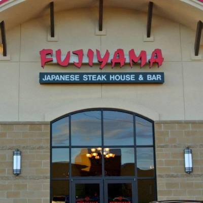
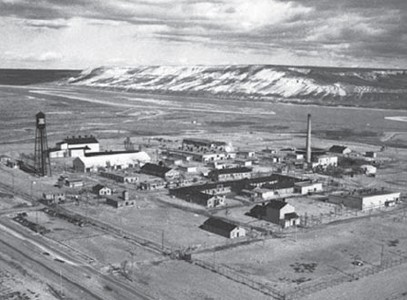
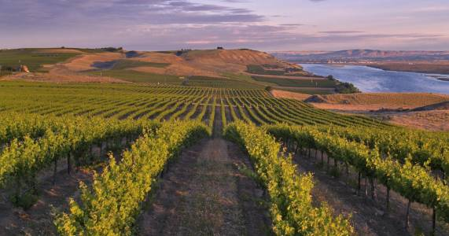

The Blue Bridge

The Tri-cities has many beatiful sights and wonderful scenery, such as the Columbia River and the Blue Bridge.
Boat Races

Every summer along the Columbia there are fun events like the hydro boat races.
Restaurants

The Tri-cities is home to many different types of cultures as evidenced by the diverse food experiences available.
Hanford

Richland, Washington was where the Handford nuclear sight was created.
The Toyota Center

The Toyota Center hosts events all year round, from football games, to concerts, to high school graduation.
Vineyards

Washington is famous for their orchards and vineyards. There are many that can be seen as you drive around the city and along the outskirts of town.